토목산업기사 (2009-05-10 기출문제)
1과목: 응용역학
1. 균질한 균일 단면봉이 그림과 같이 P1, P2, P3 의 하중을 B, C, D점에서 받고 있다. 각 구간의 거리 a=1.0m, b=0.4m, c=0.6m 이고 P2=10t, P3= 5t의 하중이 작용할 때 D점에서의 수직방향 변위가 일어나지 않기 위한 하중 P1은 얼마인가?
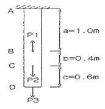
- 24t
- 20t
- 16t
- 13t
(정답률: 알수없음)

2. 다음 그림에서 두 힘(P1=5t, P2=4t)에 대한 합력(R) 의 크기와 합력의 방향(θ)값은?
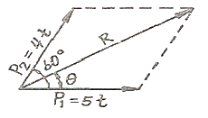
- R = 7.81t, θ = 26.3°
- R = 7.94t, θ = 26.3°
- R = 7.81t, θ = 28.5°
- R = 7.94t, θ = 28.5°
(정답률: 알수없음)
3. 그림과 같이 강선과 동선에 200kg의 하중이 작용할 때 동선에 발생하는 힘은? (단, 강선과 동선의 단면적은 같고, 강선의 탄성계수는 2×106kg/cm2, 동선의 탄성계수는 1×106kg/cm2이다)
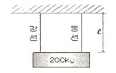
- 66.7kg
- 100kg
- 133.3kg
- 200kg
(정답률: 36%)
4. 그림과 같이 1방향 편심을 갖는 단주의 A점에 100t의 하중(P)이 작용할 때, 이 기둥에 발생하는 최대응력은?
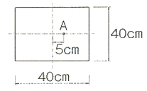
- 46.9kg/cm2
- 62.5kg/cm2
- 86.7kg/cm2
- 109.4kg/cm2
(정답률: 알수없음)
5. 다음 중 변형에너지에 속하지 않는 것은?
- 외력의 일
- 축방향 내력의 일
- 휨모멘트에 의한 내력의 일
- 전단력에 의한 내력의 일
(정답률: 93%)
6. 어떤 재료의 탄성계수가 E, 프와송비가 ν일 때 이 재료의 전단 탄성계수 G는 어떻게 표시되는가?
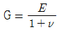
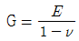
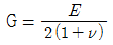
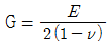
(정답률: 알수없음)
7. 그림과 같은 3-Hinge 아치의 수평반력 HA는 몇 ton인가?
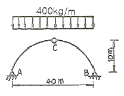
- 6
- 8
- 10
- 12
(정답률: 77%)
8. 그림과 같은 보의 지점 B의 반력 RB는?
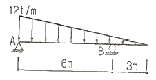
- 18.0t
- 27.0t
- 36.0t
- 40.5t
(정답률: 알수없음)
9. 그림과 같이 중량 300kg인 물체가 끈에 매달려 지지되어 있을 때, 끈 AB와 BC에 작용되는 힘은?
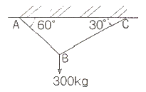
- AB = 245kg, BC = 180kg
- AB = 260kg, BC = 150kg
- AB = 275kg, BC = 240kg
- AB = 230kg, BC = 210kg
(정답률: 알수없음)
10. 다음 중 부정정구조물의 해법으로 틀린 것은?
- 3연 모멘트정리
- 처짐각법
- 변위일치의 방법
- 모멘트 면적법
(정답률: 73%)
11. 30cm × 50cm인 단면의 보에 9t의 전단력이 작용할때 이 단면에 일어나는 최대 전단응력은 몇 kg/cm2인가?
- 4
- 6
- 8
- 9
(정답률: 67%)
12. 그림과 같은 사각형 단면을 가지는 기둥의 핵 면적은?
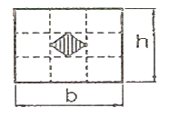
- bh / 9
- bh / 18
- bh / 16
- bh / 36
(정답률: 75%)
13. 다음과 같은 삼각형 단면에서 X-X축에 대한 단면2차모멘트 값은?
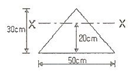
- 112500cm
- 142500cm
- 172500cm
- 202500cm
(정답률: 알수없음)
14. 캔틸레버 보 AB에 등간격으로 집중하중이 작용하고 있다. 자유단 B점에서의 연직변위 δb 는? (단, 보의 EI는 일정하다.)
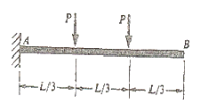
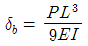
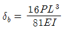
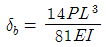
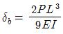
(정답률: 알수없음)
15. 다음과 같은 2경간 연속보에 등분포하중이 작용하고 있다. 중앙 지점 B에서의 지점반력은? (단, EI = 동일함)
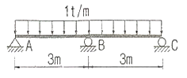
- 2.25t
- 2.50t
- 3.50t
- 3.75t
(정답률: 10%)
16. 다음 그림에서 최대 처짐각비(θB : θD)는?
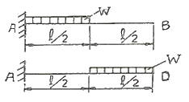
- 1 : 2
- 1 : 3
- 1 : 5
- 1 : 7
(정답률: 알수없음)
17. 그림과 같은 직사각형 도형의 도심을 지나는 X, Y 두축에 대한 최소 회전 반지름의 크기는?
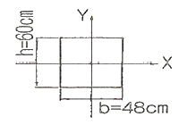
- 9.48cm
- 13.86cm
- 17.32cm
- 27.71cm
(정답률: 46%)
18. 다음 그림과 같은 보에서 A, B지점의 반력이 길게 되는 하중의 위치(x)를 구하면?
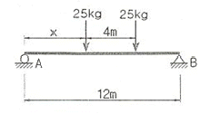
- 1m
- 2m
- 3m
- 4m
(정답률: 50%)
19. 다음 부정정보에서 지점 B의 수직 반력은 얼마인가? (단, EI는 일정함)
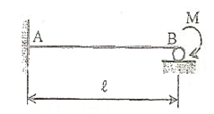
 ( ↑ )
( ↑ )- 1.3
 ( ↑ )
( ↑ ) - 1.4
 ( ↑ )
( ↑ ) - 1.5
 ( ↑ )
( ↑ )
(정답률: 69%)
20. 트러스를 정적으로 1차응력을 해석하기 위한 다음 가정 사항 중 틀린 것은?
- 절점을 잇는 직선은 부재축과 일치한다.
- 하중은 절점과 부재내부에 작용하는 것으로 한다.
- 모든 하중 조건은 Hooke의 법칙을 따른다.
- 각 부재는 마찰이 없는 핀 또는 힌지로 결합되어 자유로이 회전할 수 있다.
(정답률: 알수없음)
2과목: 측량학
21. 폐합트래버스 측량의 내업을 하기 위하여 각 측선의 경거, 위거를 계산한 결과 측선34의 자료가 없었다. 측선34의 방위각은? (단, 폐합오차는 없는 것으로 가정한다.)
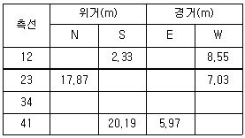
- 64° 10' 44“
- 64° 49' 14“
- 244° 10' 44“
- 115° 49' 14“
(정답률: 50%)
22. 체적계산에 있어서 양 단면의 면적이 A1 = 88m2, A2 = 44m2, 중간 단면적 Am = 70m2 이다. A1, A2 단면 사이의 거리 h가 30m 이면 체적은 얼마인가? (단, 각주공식 사용)
- 2040m3
- 2060m3
- 2460m3
- 2640m3
(정답률: 70%)
23. 거리의 정확도 1/10000을 요구하는 100m 거리 측량에서 사거리를 측정해도 수평거리로 허용되는 두점 간의 고저차 한계는 얼마인가?
- 0.707m
- 1.414m
- 2.121m
- 2.828m
(정답률: 37%)
24. 노선측량에서 교점 I.P는 기점에서 121.40m 의 위치에 있고 곡선반경 R = 200m, 교각 I = 38° 34' 50“, 중심말뚝길이 20m 인 단곡선에서 곡선길이 C.L은?
- 134.67m
- 120.00m
- 91.50m
- 70.00m
(정답률: 55%)
25. 도로시점에서 교점까지의 추가거리가 546.42m 이고, 교각이 38° 16' 40“ 일 때 곡선반지름 300m인 단곡선에서 시단현의 편각 δ1 의 값은? (단, 중심말뚝 간격은 20m 이다.)
- 0° 15' 38“
- 1° 54' 35“
- 1° 35' 54“
- 1° 41' 21“
(정답률: 알수없음)
26. A점의 표고 118m, B점의 표고 145m, A점과 B점의 수평거리가 250m이며, 등경사일 때 A점으로부터 130m 등고선이 통과하는 점까지의 수평거리는?
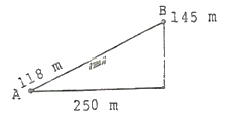
- 19m
- 111m
- 139m
- 311m
(정답률: 46%)
27. 매개변수 A 가 60m인 클로소이드 곡선상의 시점에서 곡선길이(L)가 30m일 때 곡선의 반지름(R)은?
- 60 m
- 120 m
- 90 m
- 150 m
(정답률: 알수없음)
28. 교호수준측량을 한 결과 그림과 같은 때 B점의 표고는? (단, A점의 지반고는 100m이다.)
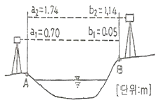
- 100.535m
- 100.625m
- 100.685m
- 101.065m
(정답률: 100%)
29. 방대한 지역의 측량에 적합하며 동일 측점 수에 대하여 포괄면적이 가장 넓은 삼각망은?
- 유심 삼각망
- 사변형망
- 단열 삼각망
- 복합 삼각망
(정답률: 80%)
30. 표준자보다 35mm가 짧은 50m 테이프로 측정한 거리가 450.000m일 때 실제거리는 얼마인가?
- 449.685m
- 449.895m
- 450.1⑤m
- 450.315m
(정답률: 알수없음)
31. 각측량시 방향각에 6“ 의 오차가 발생한다면 3km 떨어진 측점의 거리오차는 얼마인가?
- 5.6cm
- 8.7cm
- 10.8cm
- 12.6cm
(정답률: 알수없음)
32. 수심 h인 하천의 유속을 측정하기 위해 수면에서 0.2h, 0.6h, 0.8h의 깊이에서 각 점의 유속이 각각0.98m/sec, 0.72m/sec, 0.56m/sec일 때의 평균 유속은?
- 0.753m/sec
- 0.745m/sec
- 0.737m/sec
- 0.720m/sec
(정답률: 알수없음)
33. 직사각형 모양의 토지면적을 1/1000 정확도로 산출하려면 변 길이의 측정 정확도는 얼마로 측정해야 하는 가?
- 1/500
- 1/1000
- 1/2000
- 1/1000000
(정답률: 알수없음)
34. 수준점 A, B, C로부터 P점의 표고를 결정하기 위해 수준측량을 하여, 그 결과가 표와 같은 때 P점 표고의 최확값은 얼마인가?(오류 신고가 접수된 문제입니다. 반드시 정답과 해설을 확인하시기 바랍니다.)
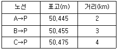
- 50.445m
- 50.455m
- 50.458m
- 50.475m
(정답률: 37%)
35. 노선의 완화곡선으로써 3차 포물선이 주로 사용되는 곳은?
- 고속도로
- 일반철도
- 시가지전철
- 일반도로
(정답률: 88%)
36. 비행고도가 2100m이고 사진( I )의 주점기선장이 74mm, 사진( II )의 주점기선장이 76mm일 때, 시차차가 1.8mm 인 구조물의 높이는?
- 20.5m
- 34.7m
- 50.4m
- 72.5m
(정답률: 50%)
37. 도상에 표고를 숫자로 나타내는 방법으로 하천, 항만, 해안측량 등에서 수심측량을 하여 고저를 나타내는 경우에 주로 사용되는 것은?
- 음영법
- 등고선법
- 영선법
- 점고법
(정답률: 85%)
38. 트래버스 측량에 의해 다음과 같은 결과를 얻었다. 측선 34의 횡거는? (단위 : m)
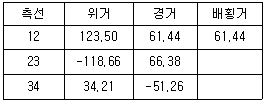
- 102.19m
- 189.26m
- 204.38m
- 361.850m
(정답률: 10%)
39. 입체시에 의한 과고감에 대한 설명으로 옳지 않은 것은?
- 촬영기선이 긴 경우가 짧은 경우보다 커진다.
- 초점거리가 짧은 경우가 긴 경우보다 커진다.
- 촬영고도가 낮은 경우가 높은 경우보다 커진다
- 입체시를 할 경우 눈의 높이가 낮은 경우가 높은 경우보다 커진다.
(정답률: 알수없음)
40. 측량의 분류 중 측량목적에 따른 분류로 적당치 않은 것은?
- 노선측량
- 공공측량
- 하천측량
- 광산측량
(정답률: 60%)
3과목: 수리학
41. Darcy의 법칙에서 지하수의 유속공식은? (단, k =투수계수, C =유속계수, H =수두차, I = 동수 경사, n = 조도계수, g = 중력가속도)
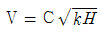
- V = kI
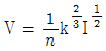
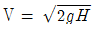
(정답률: 42%)
42. 물이 3.18m/sec의 속도로 그림과 같은 원형 관을 흐를 때 관의 압력은? (단, 관 중심에서 에너지선까지의 높이는 1.2m 이다.)
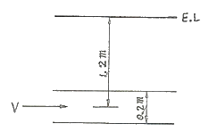
- 0.54t/m2
- 0.68t/m2
- 0.72t/m2
- 0.83t/m2
(정답률: 37%)
43. 그림과 같은 단면 A, B, C, D, E, F에 작용하는 전수압은?
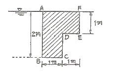
- 2.5t
- 4.9t
- 24.5t
- 29.4t
(정답률: 알수없음)
44. ( )안에 들어갈 용어로 알맞은 것은?
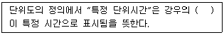
- 지속시간
- 기저시간
- 도달시간
- 유도시간
(정답률: 80%)
45. 그림과 같은 사다리꼴 인공수로의 유적(A)과 경심(R)은?
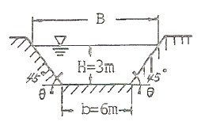
- A = 27m2, R = 2.64m
- A = 27m2, R = 1.86m
- A = 18m2, R = 1.86m
- A = 18m2, R = 2.64m
(정답률: 65%)
46. 다음 그림과 같이 원관으로 된 관로에서 D2=200mm, Q2=150ℓ/sec 이고, D3=150mm, V3=2.2m/sec인 경우 D1=300mm에서의 유량 Q1은?
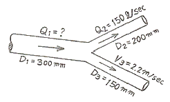
- 188.9ℓ/sec
- 180.0ℓ/sec
- 170.4ℓ/sec
- 160.2ℓ/sec
(정답률: 70%)
47. 후르드수와 한계경사 및 흐름의 상태 중 상류일 조건으로 옳은 것은? (단, Fr : 후르드수, I : 수로경사, Ic : 한계경사, V : 유속, Vc : 한계유속, y : 수심, yc : 한계수심)
- V ＞ Vc
- Fr ＞ 1
- I ＜ Ic
- Y ＜ Yc
(정답률: 70%)
48. Darcy의 법칙을 지하수에 적용시킬 때 가장 잘 일치되는 경우는?
- 층류인 경우
- 난류인 경우
- 상류인 경우
- 사류인 경우
(정답률: 알수없음)
49. 수면표고가 28m인 정수장에서 직경 600mm인 강관 900mm를 이용하여 수면표고 39m인 배수지로 양수하려고 한다. 유량이 1.0m3/sec이고 관로의 마찰손실 계수가 0.03일 때 펌프의 소요동력은 얼마인가? (단, 마찰손실만 고려하며, 펌프 및 모터의 효율은 각각 80% 및 70% 이다.)
- 49.6kW
- 59.7kW
- 70.9kW
- 694.8kW
(정답률: 알수없음)
50. 물이 들어 있는 원통을 밑면 원의 중심을 축으로 일정한 각속도로 회전시킬 때에 대한 설명으로 옳지않은 것은? (단, 물의 양은 변화가 없는 경우)
- 회전할 때의 원통 측면에 작용하는 전수압은 정지시보다 크다.
- 원통 측면에 작용하는 압력은 원통의 반지름이 커지면 그 크기는 증가한다.
- 정지 시나 회전 시의 전 밑면이 받는 수압은 동일하다.
- 회전 시의 원통 밑면의 외측 수압강도는 정지시와 크기가 같다.
(정답률: 10%)
51. 그림에서 수문단위폭당 작용하는 F를 구하는 운동량 방정식으로 옳은 것은? (단, 바닥마찰은 무시하며, w는 물의 다위중량, ρ는 물의 밀도, Q는 단위폭당 유량이다.)
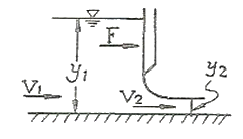
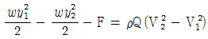
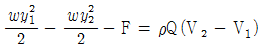
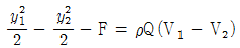
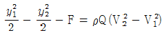
(정답률: 30%)
52. 침투지수법에 의한 침투능 추정방법에 관한 다음 설명 중 틀린 것은?
- 침투지수란 호우기간의 총침투량을 호우지속 기간으로 나눈 것이다
- ø-index는 강우주상도에서 유효우량과 손실우량을 구분하는 수평선에 상응하는 강우강도와 크기가 같다
- W-index는 강우강도가 침투능보다 큰 호우기간 동안의 평균침투율이다.
- ø-index법은 침투능의 시간에 따른 변화를 고려한 방법으로서 가장 많이 사용된다.
(정답률: 알수없음)
53. 관내의 흐름이 층류일 때 마찰응력 τ 와 τo 의 관계로 옳은 것은?
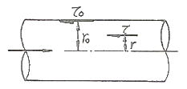
- τo = τ(1-r)
- τo = τ(r-1)
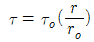
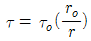
(정답률: 9%)
54. 다음 표에서 Thiessen법으로 유역평균우량을 구한 값은?
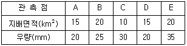
- 25.25mm
- 26.25mm
- 27.25mm
- 30.20mm
(정답률: 알수없음)
55. 정상류의 흐름에 대한 설명으로 가장 적합한 것은?
- 모든 점에서 유동특성이 시간에 따라 변하지 않는다.
- 수로의 어느 구간을 흐르는 동안 유속이 변하지 않는다.
- 모든 점에서 유체의 상태가 시간에 따라 일정한 비율로 변한다.
- 유체의 입자들이 모두 열을 지어 질서 있게 흐른다.
(정답률: 73%)
56. 오리피스에서의 유량 Q=KH1/2을 계산할 때 수두 H의 측정에 1%의 오차가 있으면 유량 Q의 계산결과에서 발생되는 오차는?
- 5%
- 2%
- 1%
- 0.5%
(정답률: 40%)
57. 모세관 현상에 관한 설명 중 옳은 것은?
- 모세관 내의 액체의 상승 높이는 모세관 주위의 중력과 표면장력 등에 관계된다.
- 모세관 내의 액체의 상승 높이는 모세관 지름의 제곱에 반비례한다.
- 모세관 내의 액체의 상승 높이는 모세관의 크기에만 관계된다.
- 모세관의 높이는 어느 액체를 막론하고 주위의 액체면 보다 높게 상승한다.
(정답률: 75%)
58. 가능최대강수량(probable maximum precipitation, PMP)에 대한 설명으로 틀린 것은?
- 정상적인 조건하에서 발생 가능한 최대강수량으로 가장 극심한 기상조건에서 발생한 최대강수량은 제외 한다.
- 유역면적에 따라 그 크기가 달라진다.
- 강우지속기간에 따라 그 크기가 달라진다.
- 과거 발생 호우의 극치를 사용한 통계학적 방법에 의해 추정하는 것이 보통이다.
(정답률: 알수없음)
59. 오리피스에서 수축계수(Ca)가 0.64, 유속계수(Cv)가 0.98 일 때 유량계수(C)는 얼마인가?
- 0.63
- 0.81
- 0.98
- 1.53
(정답률: 62%)
60. 물이 들어있고 뚜껑이 없는 수조가 14.7m/sec2로 연직상향으로 가속될 때 수조 속 깊이 2.0m에서의 압력은? (단, 물의 단위중량은 1.0ton/m3이다.)
- 1.0ton/m3
- 3.0ton/m3
- 5.0ton/m3
- 7.0ton/m3
(정답률: 알수없음)
4과목: 철근콘크리트 및 강구조
61. 그림과 같은 맞대기 용접이음의 유효길이는 얼마인가?
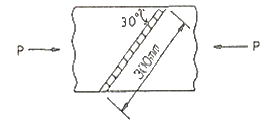
- 150mm
- 300mm
- 400mm
- 600mm
(정답률: 60%)
62. 대칭 T형보에서 경간이 12m 이고, 양쪽 슬래브의 중심간격이 1800mm, 플랜지의 두께 120mm, 복부의 폭 300mm 일 때 플랜지의 유효폭은 얼마인가?
- 1800mm
- 2000mm
- 2220mm
- 2600mm
(정답률: 80%)
63. 인장 이형철근의 정착길이는 기본정착길이(lab)에 보정계수를 곱한다. 상부수평 철근의 보정계수(α)는?
- 1.3
- 1.0
- 0.8
- 0.75
(정답률: 55%)
64. 철근콘크리트 구조물에서 비틀림철근으로 사용할 수 없는 것은?
- 부재축에 수직인 폐쇄스터럽
- 부재축에 수직인 횡방향 강선으로 구성된 폐쇄용접철망
- 주인장철근에 30° 이상의 각도로 구부린 굽힘철근
- 철근콘크리트 보에서 나선철근
(정답률: 알수없음)
65. 위험단면에서 1방향 슬래브의 정철근 및 부철근의 중심 간격 규정으로 옳은 것은?
- 슬래브 두께의 2배 이하이어야 하고, 또한 300mm 이하로 하여야 한다.
- 슬래브 두께의 2배 이하이어야 하고, 또한 400mm 이하로 하여야 한다.
- 슬래브 두께의 3배 이하이어야 하고, 또한 300mm 이하로 하여야 한다.
- 슬래브 두께의 3배 이하이어야 하고, 또한 400mm 이하로 하여야 한다.
(정답률: 75%)
66. 단면이 300 × 500mm 이고, 150mm2의 PS 강선 6개를 강선군의 도심과 부재단면의 도심축이 일치하도록 배치된 프리텐션 PC 부재가 있다. 강선의 초기 긴장력이 1000MPa일 때 콘크리트의 탄성변형에 의한 프리스트 레스의 감소량은? (단, n = 6)
- 36MPa
- 30MPa
- 6MPa
- 4.8MPa
(정답률: 알수없음)
67. 연속보 또는 1방향 슬래브에서 모멘트와 전단력을 구하기 위해서 근사해법을 적용할 수 있는 조건 중에서 맞지 않는 것은?
- 활하중이 고정하중의 3배를 초과하는 경우
- 등분포 하중이 작용하는 경우
- 인접 2경간의 차이가 짧은 경간의 20% 이하인 경우
- 부재의 단면 크기가 일정한 경우
(정답률: 알수없음)
68. 그림과 같은 단순보에서 자중을 포함하여 계수하중이 20kN/m 작용하고 있다. 이 보의 위험단면에서 전단력은 얼마인가?
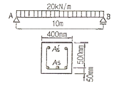
- 100kN
- 90kN
- 80kN
- 70kN
(정답률: 42%)
69. 다음 중 용접이음을 한 경우 용접부의 결함을 나타내는 용어가 아닌 것은?
- 언더컷(undercut)
- 오버랩(overlap)
- 크랙(crack)
- 필렛(fillet)
(정답률: 73%)
70. 철근콘크리트 구조물의 전단철근 상세에 대한 다음 설명중 잘못된 것은?
- 주인장 철근에 30° 이상의 각도로 구부린 굽힘 철근은 전단철근으로 사용할 수 있다.
- 스터럽과 굽힘철근을 조합하여 전단철근으로 사용할 수 없다.
- 경사스터럽과 굽힘철근은 부재의 중간높이인 0.5d에서 반력점 방향으로 주인장철근까지 연장된 45° 선과 한번이상 교차되도록 배치하여야한다
- 용접 이형철망을 제외한 일반적인 전단철근의 설계 기준항복강도는 400MPa을 초과할 수 없다
(정답률: 43%)
71. fck = 24MPa, fy = 300MPa일 때 다음 그림과 같은 보의 균형 철근비(ρb)는?
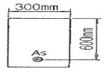
- 0.0013
- 0.0129
- 0.0385
- 0.0488
(정답률: 82%)
72. 그림의 띠철근 기둥에서 띠철근으로 D13(공칭지름 12.7mm) 및 축방향 철근으로 D35(공칭지름34.9mm)의 철근을 사용할 때, 띠철근의 최대 수직간격은 얼마인가?
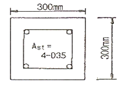
- 200mm
- 300mm
- 560mm
- 610mm
(정답률: 40%)
73. 프리스트레스의 감소원인 중 포스트텐션공법에만 해당되는 것은 어느 것인가?
- 탄성변형에 의한 손실
- 마찰에 의한 손실
- 콘크리트의 크리프와 건조수축에 의한 손실
- PS강재의 릴랙세이션(relaxation)에 의한 손실
(정답률: 알수없음)
74. D-25(공칭직경 : 25.4mm)를 사용하는 압축 이형철근의 기본정착 길이는? (단, fck = 27MPa, fy = 400MPa 이다.)
- 357mm
- 489mm
- 745mm
- 1174mm
(정답률: 알수없음)
75. 복철근 직사각형 단면에서 응력사각형의 깊이 a의 값은? (단, fck = 24MPa, fy = 300MPa, As = 5-D35 = 4790mm2, As' = 2-D35 = 1916mm2이다.)
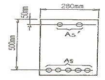
- 151mm
- 268mm
- 107mm
- 147mm
(정답률: 70%)
76. 다음과 같은 단철근 직사각형 단면보의 설계휨강도 øMn을 구하면? (단, As = 2000mm2, fck = 21MPa, fy = 300MPa)
- 213.1kN ㆍ m
- 266.4kN ㆍ m
- 226.4kN ㆍ m
- 239.9kN ㆍ m
(정답률: 알수없음)
77. 단철근 직사각형보의 단면의 폭 b = 400mm 유효깊이 d = 800mm, As = 2000mm2일 때 철근비(ρ)는 얼마인가?
- ρ = 0.004
- ρ = 0.0⑤
- ρ = 0.006
- ρ = 0.008
(정답률: 알수없음)
78. PS강재에 요구되는 일반 성질 중 옳지 않은 것은?
- 늘음과 인성(靭性)이 없을 것
- 인장강도가 클 것
- 릴랙세이션(relaxation)이 적을 것
- 응력부식에 대한 저항성이 클 것
(정답률: 알수없음)
79. 계수 전단력 Vu = 200kN에 대한 수직스터럽 간격의 최대값은? (단, 사용된 스터럽은 철근 D13이고, 철근 D13 1본의 단면적은 126.7mm2, fck=24MPa, fy=350MPa 이다.)
- 100mm
- 150mm
- 200mm
- 250mm
(정답률: 알수없음)
80. 전체깊이가 900mm를 초과하는 휨부재 복부의 양측면에 부재 축방향으로 배근하는 철근의 명칭은?
- 배력철근
- 표피철근
- 피복철근
- 연결철근
(정답률: 70%)
5과목: 토질 및 기초
81. 사면의 경사각을 70° 로 굴착하고 있다. 흙의 점착력 1.5t/m2, 단위체적중량을 1.8t/m2으로 한다면 이 사면의 한계고는? (단, 사면의 경사각이 70° 일 때 안정계수는 4.8로 한다.)
- 2.0m
- 4.0m
- 6.0m
- 8.0m
(정답률: 43%)
82. 어떤 흙의 No.200체(0.074mm) 통과율 60%, 액성 한계가 40%, 소성지수가 10%일 때 군지수는?
- 3
- 4
- 5
- 6
(정답률: 알수없음)
83. 접지압의 분포가 기초의 중앙부분에 최대응력이 발생하는 기초형식과 지반은 어느 것인가?
- 연성기초, 점성지반
- 연성기초, 사질지반
- 강성기초, 점성지반
- 강성기초, 사질지반
(정답률: 70%)
84. ø=0인 포화점토를 비압밀비배수시험을 하였다. 이 때 파괴시 최대주응력이 2.0kg/cm2, 최소주응력이 1.0kg/cm2이었다. 이 포화점토의 비배수점착력은?
- 0.5kg/cm2
- 1.0kg/cm2
- 1.5kg/cm2
- 2.0kg/cm2
(정답률: 10%)
85. 현장에서 채취한 흙 시료의 교란된 정도를 알기 위하여 시료 채취에 사용한 원통형 튜브(tube)의 규격을 조사한 결과 튜브의 외경이 5 cm이고 절단면의 내경은 4.7625cm 였다. 면적비(Ar)는 얼마인가?
- 20.54 %
- 15.82 %
- 10.22 %
- 5.64 %
(정답률: 39%)
86. 그림과 같은 옹벽에 작용하는 전주동토압은?
- 3.24t/m
- 2.67t/m
- 1.73t/m
- 0.89t/m
(정답률: 알수없음)
87. 어떤 점성토에 수직응력 40kg/cm2를 가하여 전단시켰다. 전단면상의 간극수압이 10kg/cm2이고 유효응력에 대한 점착력, 내부마찰각이 각각 0.2kg/cm2, 20° 이면 전단 강도는 얼마인가?
- 6.4kg/cm2
- 10.4kg/cm2
- 11.1kg/cm2
- 18.4kg/cm2
(정답률: 알수없음)
88. 흙의 다짐에 대한 다음 사항 중 옳지 않은 것은?
- 최적 함수비로 다질 때 건조밀도는 최대가 되다.
- 세립토의 함유율이 증가할수록 최적 함수비는 증대된다.
- 다짐에너지가 클수록 최적 함수비는 커진다.
- 점성토는 조립토에 비하여 다짐곡선의 모양이 완만하다.
(정답률: 47%)
89. 연약지반개량공사에서 성토하중에 의해 압밀된 후 다시 추가하중을 재하한 직후의 안정검토를 할 경우 삼축 압축시험 중 어떠한 시험이 가장 좋은가?
- CD시험
- UU시험
- CU시험
- 급속전단시험
(정답률: 80%)
90. 모래 치환법에 의한 현장 흙의 밀도시험 결과 흙을 파낸 부분의 체적이 1800cm3이고 질량이 3.87kg 이었다. 함수비가 10.8% 일 때 건조단위밀도는?
- 1.94g/cm3
- 2.94g/cm3
- 1.84g/cm3
- 2.84g/cm3
(정답률: 알수없음)
91. 그림에서 수두차 h를 최소 얼마 이상으로 하면 모래 시료에 분사현상이 발생하겠는가?
- 16.5cm
- 17.0cm
- 17.4cm
- 18.0cm
(정답률: 알수없음)
92. 단위 체적중량 1.8t/m3, 점착력 2.0t/m3, 내부마찰각 0°인 점토지반에 폭 2m, 근입깊이 3m의 연속기초를 설치하였다. 이 기초의 극한 지지력을 Terzaghi 식으로 구한값은? (단, 지지력 계수 Nc = 5.7, Nr = 0, Nq = 1.0 이다)
- 23.2t/m3
- 16.8t/m3
- 12.7t/m3
- 8.4t/m3
(정답률: 알수없음)
93. 다음 그림과 같은 다층지반에서 연직방향의 등가투수계수를 계산하면 몇 cm/sec인가?
- 5.8 × 10-3
- 6.4 × 10-3
- 7.6 × 10-3
- 1.4 × 10-2
(정답률: 64%)
94. 직경 30cm의 평판을 이용하여 점토위에서 평판재하시험을 실시하고 극한지지력 15t/m2을 얻었다고 할때 직경이 2m인 원형기초의 총허용하중을 구하면? (단, 안전율은 3을 적용한다.)
- 8.3ton
- 15.7ton
- 24.2ton
- 32.6ton
(정답률: 알수없음)
95. 지표면에 8t의 집중하중이 작용할 때 하중작용 위치 직하 2m 위치에 있어서의 연직응력은 약 얼마인가? (단, 영향치는 0.4775 임)
- 0.5t/m2
- 1.0t/m2
- 2.0t/m2
- 6.0t/m2
(정답률: 34%)
96. 말뚝의 지지력을 결정하기 위해 엔지니어링 뉴스 공식을 사용할 때 안전율은?
- 1
- 2
- 3
- 6
(정답률: 알수없음)
97. 간극비 e = 0.65, 함수비 w = 20.5%, 비중 Gs = 2.69 인 사질점토가 있다. 이 흙의 습윤밀도 rt는?
- 1.63g/cm3
- 1.96g/cm3
- 1.02g/cm3
- 1.35g/cm3
(정답률: 70%)
98. Terzaghi의 압밀이론에 대한 기본 가정을 옳은 것은?
- 흙은 모두 불균질이다.
- 흙 속의 간극은 공기로만 가득차 있다.
- 토립자와 물의 압축량은 같은 양으로 고려한다
- 압력-간극비의 관계는 이상적으로 직선화 된다
(정답률: 9%)
99. 다음 중 점성토 지반의 개량 공법으로 적합하지 않은 것은?
- 샌드드레인 공법
- 치환 공법
- 바이브로플로테이션 공법
- 프리로딩 공법
(정답률: 알수없음)
100. 동해(凍害)의 정도는 흙의 종류에 따라 다르다. 다음 중 우리나라에서 가장 동해가 심한 것은?
- silt
- colloid
- 점토
- 굵은모래
(정답률: 90%)
6과목: 상하수도공학
101. 지름이 30cm이고 길이가 650m인 관을 20cm의 등치관으로 바꾸는데 필요한 관의 길이는 약 얼마인가? (단, Hazen-Williams 식을 적용)
- 90m
- 433m
- 975m
- 4683m
(정답률: 36%)
102. 높이 25m의 고수조로 매시간 20ton의 물을 양수하고자 한다. 이때 흡입양정이 5m이고, 마찰 손실수두가 10m라면 펌프의 전양정(total lift)은 얼마인가?
- 15m
- 30m
- 40m
- 50m
(정답률: 알수없음)
103. 상수도시설 중 급속여과지에서 여과지의 수심 및 여유고에 대한 설명으로 옳은 것은?
- 여과지의 모래면 위의 수심은 90~120cm를 표준으로 한다.
- 여과지 여재표면상의 수심은 여과 중에 부압을 발생시키지 않는 수심으로 한다.
- 고수위로부터 여과지 상단까지의 여유고는 3m 정도로 한다.
- 일반적으로 급속여과지의 수심을 3m 이상으로 유지 하는 경우가 많다.
(정답률: 25%)
104. 정수장에서 배출수 처리방식을 순서대로 나열한 것은?
- 탈수 - 조정 - 농축 - 건조
- 조정 - 농축 - 탈수 - 건조
- 조정 - 탈수 - 농축 - 건조
- 탈수 - 조정 - 건조 - 농축
(정답률: 알수없음)
1⑤. 하수의 배제 방법 중에서 분류식에 대한 설명으로 옳은 것은?
- 홍수시 하수가 미처리된 채 방류된다.
- 처리장에 유입되는 하수량의 변화가 적다.
- 처리장에 유입되는 부하 농도가 작아진다.
- 도시보다는 농촌에서 주로 채택하는 방법이다
(정답률: 50%)
106. 하수도시설의 계획우수량 산정시 고려 사항 및 이에 대한 설명으로 옳은 것은?
- 우수유출량의 산정식 : Hazen-Williams 식에 의한다.
- 확률년수 : 원칙적으로 20년을 원칙으로 하되, 이를 넘지 않도록 한다.
- 하상계수 : 토지이용도별 기초계수로 지역의 총괄 계수를 구하는 것이 원칙이다.
- 유달시간 : 유입시간과 유하시간을 합한 것이다.
(정답률: 알수없음)
107. 취수지점 위치선정에 고려하여야 할 사항으로 틀린 것은?
- 하천관리시설 또는 공작물에 근접하지 않아야한다.
- 구조상의 안정을 확보할 수 있어야 한다.
- 장래에도 양호한 수질을 확보할수 있어야한다
- 유심, 유로의 변화가 충분히 있어야 한다.
(정답률: 70%)
108. 어떤 중소도시에 계획급수 인구가 50000명일 때 급수본관을 설계하기 위한 계획시간최대급수량은? (단, 계획 1인 1일 최대급수량은 300L, 시간계수는 1.5로 한다.)
- 22500m3
- 15000m3
- 937.5m3
- 416.7m3
(정답률: 19%)
109. 상수도시설 중에서 계획 1일 최대급수량을 기준으로 수량을 계획하지 않는 시설은?
- 배수시설
- 정수시설
- 취수시설
- 송수시설
(정답률: 40%)
110. 하수관거의 유속 및 최소관경에 대한 설명 중 틀린것은?
- 우수관거 및 합류관거의 최소관경은 250mm를 표준으로 한다.
- 계획시간최대오수량에 대한 오수관거 최소유속은 0.6m/s로 한다.
- 계획우수량에 대한 우수관거 및 합류관거의 최소 유속은 0.4m/s로 한다.
- 오수관거의 최소관경은 200mm를 표준으로한다.
(정답률: 64%)
111. 표준 BOD 시험은 몇 도에서 몇 일단 배양하는가? (단, 암실에서 배양함)
- 15℃에서 3일간
- 15℃에서 5일간
- 20℃에서 3일간
- 20℃에서 5일간
(정답률: 10%)
112. 다음 중 고도처리방법의 하나인 암모니아 스트리핑법을 이용하여 제거하는 물질은?
- 모래
- 부유물질
- 유기물질
- 질소
(정답률: 37%)
113. 상수관망 설비 중 공기밸브의 설명으로 틀린 것은?
- 공기밸브의 설치 목적은 관내에 공기를 배제하거나 흡인하기 위해서이다.
- 관로의 종단도상에서 상향돌출부의 하단에 설치해야 하지만 돌출부가 없는 경우는 낮은 쪽의 제수밸브 밑에 설치한다.
- 관경 400mm 이상의 관에는 반드시 쌍구공기밸브 또는 급속공기밸브를 설치한다.
- 한랭지에서는 공기밸브의 동결방지 대책을 강구한다.
(정답률: 59%)
114. 취수구를 상하에 설치하여 수위에 따라 좋은 수질을 선택, 취수할 수 있으며, 수심이 일정이상 되는 지점에 설치하면 연간안정적인 취수가 가능한 시설은?
- 취수언제
- 취수탑
- 취수문
- 취수관거
(정답률: 알수없음)
115. 다음 중 가장 저양정(揚程)의 펌프는?
- 원심펌프
- 터빈펌프
- 사류펌프
- 축류펌프
(정답률: 42%)
116. 펌프에서 공동현상이 발생될 수 있는 조건이 아닌 것은?
- 흡입관의 직경이 크고 임펠러가 수중에 잠겨 있다.
- 펌프가 흡수면으로부터 매우 높이 설치되어있다.
- 펌프의 과속으로 인하여 유량이 증가한다.
- 관내 수온이 포화증기압 이상으로 증가한다.
(정답률: 19%)
117. 활성슬러지법에서 MLSS가 의미하는 것은?
- 폐수 중의 고형물
- 방류수 중의 부유물질
- 폭기조 중의 부유물질
- 침전지 상등수 중의 부유물질
(정답률: 알수없음)
118. 20000m3/day의 물을 처리하는데 염소 8.0kg/day를 사용한다. 접촉 10분 후 잔류염소는 0.2mg/L이다. 이때 염소 투입량과 염소요구(소비)량은 각각 몇 mg/L 인가?
- 0.6mg/L, 0.4mg/L
- 0.4mg/L, 0.2mg/L
- 0.6mg/L, 0.3mg/L
- 0.4mg/L, 0.1mg/L
(정답률: 알수없음)
119. 활성슬러지법의 고형물 체류시간(SRT)에 영향을 미치는 인자와 가장 거리가 먼 것은?
- 포기시간
- MLSS량
- 침전지부하율
- 슬러지생산량
(정답률: 알수없음)
120. 호기성 소화와 혐기성 소화를 비교할 때, 혐기성소화에 대한 설명으로 틀린 것은?
- 높은 온도를 필요로 하지 않는다.
- 유효한 자원인 메탄이 생성된다.
- 처리 후 슬러지 생성량이 적다.
- 운전시 체류시간, 온도, ph 등에 영향을 크게 받는다.
(정답률: 50%)
P2=10t, P3=5t 이므로, P1+10t+5t=0 이 되어야 한다. 따라서, P1=-15t 이다.
하지만, 문제에서는 D점에서의 수직방향 변위가 일어나지 않기 위한 P1을 구하는 것이므로, D점에서의 수직방향 반력 R도 고려해야 한다.
D점에서의 수직방향 반력 R은 P2와 P3의 합과 같으므로, R=10t+5t=15t 이다.
따라서, P1+R=0 이 되어야 하므로, P1=-R=-15t 이다.
하지만, 문제에서는 P1이 양수이어야 하므로, 절댓값을 취해서 최종적으로 P1=15t 이다.
따라서, 정답은 "24t"가 아니라 "15t"이다.